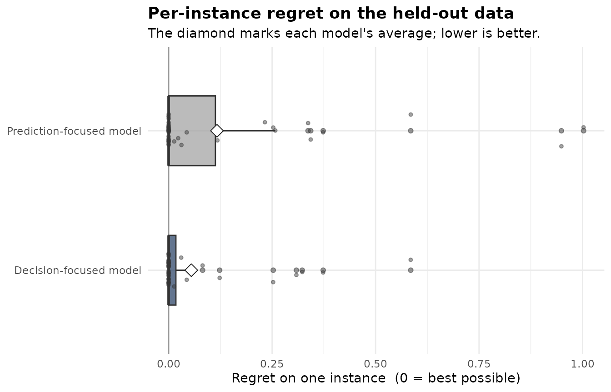

A maintenance team can service three of its eight machines each week. It picks the three with the lowest repair cost, but the cost is only known after the work, so it is predicted from features beforehand. Some features predict a machine’s cost well; others barely predict it yet still decide which three are cheapest that week. dflasso keeps the second kind.
No built-in problem fits “pick the cheapest three”, so this vignette wraps one as a custom solver and runs the whole workflow on it: fit the model, decide a new week’s machines, and check held-out regret against an ordinary prediction-focused model.
The decision, as a custom solver
optimization_problem() wraps any solver. This one takes
the predicted costs for a week’s machines and returns a 0/1 vector
marking the three to service. The objective is
sense = "min", since lower cost is better, and the count
k arrives in instance.
cheapest_k <- optimization_problem(
sense = "min",
solve = function(costs, instance) {
chosen <- order(costs)[seq_len(instance$k)]
decision <- numeric(length(costs))
decision[chosen] <- 1
decision
},
name = "cheapest-k"
)The returned vector is the same length and order as
costs. A larger problem would call a solver such as lpSolve
or igraph here instead; ?dflasso-solvers has worked
examples.
The data
Simulated repair records, one row per machine per week. Two
week-level features (load, temperature) set the week’s cost level. Three
per-machine features rank the machines within a week:
feat_mileage predicts cost well, while
feat_fault and feat_wear are weak predictors
that still shift which three are cheapest. feat_noise is
unrelated.
simulate_repair <- function(n_weeks, seed) {
set.seed(seed)
n_machines <- 8L
rows <- n_weeks * n_machines
feat_week_load <- rep(rnorm(n_weeks), each = n_machines)
feat_week_temp <- rep(rnorm(n_weeks), each = n_machines)
feat_mileage <- rnorm(rows)
feat_fault <- rnorm(rows)
feat_wear <- rnorm(rows)
feat_noise <- rnorm(rows)
repair_cost <- 5 + 2 * feat_week_load + 2 * feat_week_temp +
1.5 * feat_mileage + 0.2 * feat_fault + 0.2 * feat_wear +
rnorm(rows, sd = 0.25)
data.frame(
week = rep(sprintf("week_%02d", seq_len(n_weeks)), each = n_machines),
machine = rep(sprintf("machine_%d", seq_len(n_machines)), times = n_weeks),
feat_week_load, feat_week_temp, feat_mileage,
feat_fault, feat_wear, feat_noise, repair_cost,
stringsAsFactors = FALSE
)
}
train <- simulate_repair(80, seed = 1)
test <- simulate_repair(40, seed = 2)
head(train[, c("week", "machine", "feat_mileage", "feat_fault", "repair_cost")])
#> week machine feat_mileage feat_fault repair_cost
#> 1 week_01 machine_1 0.4251004 -1.08690882 3.120234
#> 2 week_01 machine_2 -0.2386471 -1.82608301 1.451561
#> 3 week_01 machine_3 1.0584830 0.99528181 4.683407
#> 4 week_01 machine_4 0.8864227 -0.01186178 4.025181
#> 5 week_01 machine_5 -0.6192430 -0.59962839 1.350710
#> 6 week_01 machine_6 2.2061025 -0.17794799 4.928581dfl_data() slices the feature matrix, the cost, the week
(the scenario that groups a week’s machines into one instance), and the
machine id.
train_data <- dfl_data(train, features = starts_with("feat_"),
cost = repair_cost, scenario = week,
element_id = machine)Fit
make_instances() attaches k = 3 to every
week, so the solver knows how many machines to service.
fit <- dfl_fit(train_data$x, train_data$cost, train_data$scenario,
problem = cheapest_k,
instances = make_instances(train_data$scenario, k = 3L),
element_id = train_data$element_id,
control = dfl_control(seed = 1, n_splits = 10L))
summary(fit)
#> Summary of a decision-focused cost model (dflasso)
#> Objective: minimise cost over 80 instances scored, 6 features.
#>
#> FEATURES KEPT
#> 5 of 6 features were kept for the decision.
#> 2 of these are decision-driven rescues, weak at predicting cost on their own, but
#> they move the decision, so the model kept them:
#> feat_fault, feat_wear
#> See tidy(fit) for every feature, its coefficient, and its role.
#>
#> WHAT EACH FEATURE IS FOR (across all features, by how they behave)
#> decision-relevant 2 were kept for the decision (rescued by the decision step)
#> prediction-relevant 3 were kept by the accuracy step (the usual reason)
#> both 0 do both
#> neither 1 not used by either model
#> These roles come from one random reshuffle of the instances, so they can
#> shift a little under a different seed. Judge a feature by its score in
#> tidy(fit), not by the bare label.
#>
#> DOES THE DECISION FOCUS PAY OFF? (lower regret is better)
#> Regret = how much worse a decision was than the best possible in
#> hindsight, averaged over instances.
#> This needs held-out data. Run regret(fit, x_test, cost_test,
#> scenario_test) to compare against the prediction-focused model.
#> See ?dflasso-validation.
#>
#> HOW HARD FEATURES WERE FILTERED
#> Filtering strength 0.006, chosen automatically by trying many settings and
#> keeping the best; smaller keeps more features. (this setting is called
#> lambda)
#>
#> REPRODUCIBILITY
#> Fit with seed 1; re-running with this seed gives bit-identical features,
#> scores, and decisions. Pass seed = <int> to fix it up front and quote
#> that number.
#> Decision quality was averaged over 10 random reshuffles of the instances.
#>
#> SETTINGS
#> main : features put on a common scale, 10-fold cross-validation, instances must have >= 2 elements.
#> method: n_splits = 10 (rest at defaults).feat_fault and feat_wear are the rescues:
weak predictors the decision step kept because they move which machines
are cheapest. feat_mileage and the week-level features are
kept the usual way, and feat_noise is dropped.
Decide a new week’s machines
decide() reads features only, never costs, so the choice
computes before any repair cost is known. The test weeks stand in for
new weeks here.
test_data <- dfl_data(test, features = starts_with("feat_"),
cost = repair_cost, scenario = week,
element_id = machine)
picks <- decide(fit, test_data$x, test_data$scenario,
instances_new = make_instances(test_data$scenario, k = 3L),
element_id_new = test_data$element_id)
decisions(picks)[["week_01"]]
#> machine_1 machine_2 machine_3 machine_4 machine_5 machine_6 machine_7 machine_8
#> 0 1 0 1 1 0 0 0The three 1s are the machines chosen for that week.
Did the decision focus help?
regret() scores both models on the held-out test weeks:
how much more the chosen three cost than the cheapest three under the
true costs, lower is better.
score <- regret(fit, test_data$x, test_data$cost, test_data$scenario,
instances_test = make_instances(test_data$scenario, k = 3L),
element_id_test = test_data$element_id)
score
#> Decision quality vs the prediction-focused approach (dflasso regret)
#> Lower regret is better. Regret = how much worse a decision was than the
#> best possible in hindsight, averaged over instances.
#>
#> Decision-focused model : 0.05 average regret
#> Prediction-focused model: 0.12 average regret
#>
#> The decision focus cut regret by 53.1% on this held-out data.
#>
#> Measured on 40 of 40 instances (100%); 0 set aside for missing costs, 0 had no feasible decision. Both approaches were compared on the same instances.On this simulated data the decision focus roughly halves the held-out
regret. It keeps feat_fault and feat_wear, the
two weak predictors the prediction-focused model drops. The size is
illustrative; on other data the focus may help less, or not at all, and
the held-out regret() is how to tell.
plot(score)
Where next
For a different problem, swap the solver inside
optimization_problem(); the fit, decide and regret calls
stay the same. ?dflasso-solvers has worked solvers for
assignment, transportation and spanning trees, and
?dfl_data covers the data shape.